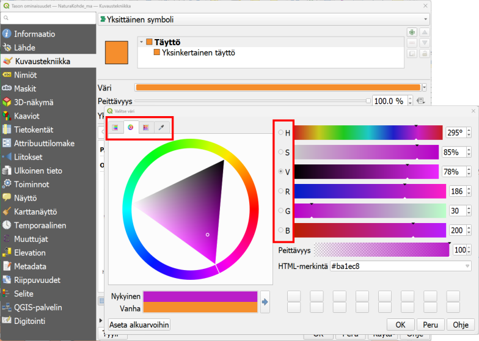

Harjoitus 3: Paikkatietoaineiston visualisointi
Harjoituksen sisältö
Harjoituksessa harjoitellaan vektoriaineiston visualisoitia
Harjoituksen tavoite
Kouluttautuja oppii eri aineistotyyppien visualisointitapoja.
Valmistautuminen
Käynnistä QGIS-ohjelmisto. Avaa uusi QGIS-projekti ja tallenna se nimellä (Projekti → Tallenna nimellä…) “QGIS_harjoitus_3”.
Lisää Espoon kaupungin WFS-rajapinnasta seuraavat aineistot:
GIS:Lintutornit
GIS:Luontopolut
GIS:ArvokkaatLuontokohteet
Vektoriaineistojen visualisointi
Aloita tutkimalla Lintutornit -tasoa, joka sisältää Espoon lintutornit. Jos et näe pisteitä kartallasi, vedä taso muiden tasojen päälle painamalla hiiren vasenta painiketta ja raahaa taso ylimmäksi listauksessa. Paina hiiren oikealla painikkeella tason nimeä (GIS:Lintutornit) tasoluettelossa. Valitse valikosta Ominaisuudet.
Tason ominaisuudet -ikkuna aukeaa. Huomaa vasemmalla oleva sivupalkki, josta löytyy eri ominaisuudet jaoteltuna aihekohtaisesti. Samaisessa sivupalkissa on Kuvaustekniikka-alavalikko, jonka valittuasi pääset muokkaamaan tason tyyliominaisuuksia:
Vaihda Väri- ja koko-arvot, ja paina Käytä. Sillä tavalla saat näkyviin tekemäsi muutokset sulkematta Tason ominaisuudet -ikkunaa. Avaa vielä jokin symbolikirjasto, esimerkiksi Suosikit, ja muuta pisteen tyyliksi jokin sinua miellyttävä tyyli. Voit myös kiertää symbolia vaihtamalla kierto-arvon astelukua. Paina sitten OK, ikkuna sulkeutuu ja luontotornitaso näkyy nyt määrittämäsi visualisointityylin tavalla.
Saat avattua edistyneet visualisointiasetukset painamalla Yksinkertainen pistesymboli valintaa. Täältä saat muokattua symbolin lisäksi esimerkiksi reunojen väriä, paksuutta sekä viivan tyyliä. Voit myös poistaa ääriviivat tai symbolin värityksen kokonaan jättäen vain ääriviivat. Muut paikkatietoaineistojen visualisoinnin työkalut saa käyttöön samalla tavalla, avaamalla hiiren oikealla Ominaisuudet ja sivupalkista Kuvaustekniikka. Klikkaamalla sivellintä Tasot-paneelin yläreunasta tai pikanäppäimellä F7 saat avatuksi Tason tyylit -ikkunan, joka on jatkuvasti avoinna karttaikkunan oikeassa laidassa. Tällöin voit helposti vaihtaa kaikkien tasojen kuvaustekniikkaa ja näet heti, miltä uusi tyyli näyttää.
Eri vektoriaineistotyypeillä (piste, viiva, monikulmio) on erilaiset kuvaustekniikan työkalut, vaikkakin ne muistuttavat paljon toisiaan. Esimerkiksi pistetasolle ei voida tehdä samoja tyylittelyjä kuin viiva- tai monikulmiotasolle. Rasteriaineistojen työkalut taas eroavat melko paljon vektoriaineistojen työkaluista.
Viiva- ja monikulmioaineiston visualisointi
Kokeile nyt itse muokata viiva- ja monikulmioaineistoja haluamaksesi. Avaa aiemmin lisätty luontopolut-tason kuvaustekniikkaikkuna samalla tavalla kuin äsken pistetason yhteydessä. Huomaa erot viiva- ja pistetason kuvaustekniikan määrittelyissä:
Vaihda viivan Väri ja Leveys ja paina taas Käytä. Tutki mitä valmiita tyylejä QGISiin on tallennettu ja testaa miltä ne näyttävät oman karttasi visualisoinnissa.
Visualisoi vielä monikulmioaineisto haluamallasi tavalla. Avaa tason GIS:ArvokkaatLuontokohteet kuvaustekniikkaikkuna ja huomaa erot verrattuna piste- ja viiva-aineistojen ominaisuuksiin. Muokkaa tason väriä Väri-kohdasta ja valitse tasolle jokin symboli haluamastasi kirjastosta. Voit myös kokeilla eri Peittävyys-arvoja. Paina Käytä ja kun olet testannut tarpeeksi, paina OK.
Saattaa olla, että aineistotasot peittävät toisensa vaikka siten, että monikulmio aineisto peittää muut sen alle jäävät aineistot. Kokeile muuttaa tasojen keskinäistä järjestystä ja siten tasojen näkymistä raahaamalla/vetämällä tasot uuteen järjestykseen Tasoluettelossa. Useimmiten monikulmiotasot on hyvä jättää alimmiksi tasoiksi. Jos kartalla halutaan visualisoida jotakin rasterikuvaa, kannattaa se/ne yleensä pitää myös alimpina tasoina. Uudelleen järjestettynä karttasi näyttää tältä:
Voit myös piilottaa tai näyttää tasoja painamalla tason nimen vasemmalla puolella olevaa ruutua.
Tutustu tyylien hallintaan
Joskus tarvitaan samanlaista tyyliä usein. Silloin voidaan luoda valmiita tyylejä, mitä voi nopeasti saada käyttöön uusille aineistoille. Valitse tyylien hallinta seuraavasta napista:
Tässä näkymässä näet valmiita tyylejä. Alhaalla keskellä on vihreä plus-symbolia. Sillä voi luoda uusia tyylejä.
Kokeile luoda esimerkiksi pisteille uuden visualisoinnin. Voit tämän jälkeen tallentaa visualisoinnin “oletuksena” tai ainoastaan tähän projektiin. Jos aiot käyttää samaa visualiointia muualla niin tallenna se oletuksena. Visualisointiin voi myös lisätä tägejä, jotka helpottavat visualisoinnin löytämistä.
Tyylit jotka tallennat tyylien hallinta-ikkunassa tulevat myös esiin kun olet asettamassa tyylejä tasoille. On myös mahodllista viedä omat tyylit ulos QGISistä XML-muodossa ja tuoda sisään jonkun toisen tekemiä tyylejä. Tämä tapahtuu Tuo/Vie-napin kautta.
Muista myös, että tyylejä voi kopioida tasosta toiseen klikkaamalla tasoa oikealla ja valitsemalla Tyylit -> Kopioi tyylit -> Kuvaustekniikka
Lisätehtävä: Monikulmioaineiston edistynyt visualisointi
Visualisointeihin voi tehdä myös useampia tasoja monipuolisemman kuvaustekniikan saavuttamiseksi. Muokataan GIS:ArvokkaatLuontokohteet-aineiston visualisointia. Tavoitteena on saada kutakuinkin tällainen visualisointi tasolle:
Ensimmäiseksi muutamme vektoriaineiston väriä. Avaa tason Ominaisuudet → Kuvaustekniikka ja klikkaa Väri-kohdassa olevaa väripalkkia. Valitse haluamasi väri vektoriaineistolle. Huomaa, että voit määritellä värit arvo HSV- (Hue, Saturation, Value) tai RGB-arvoilla (Red, Green, Blue). Peittävyys-arvolla säädät värin läpinäkyvyyttä. Kokeile myös Värikarttaa, Väripyörää ja Liukuväriä (välilehdet). Valittuasi sopivan värin, paina OK. Paina sen jälkeen Ominaisuudet-ikkunasta Käytä.

Avaa edistyneet visualisointityökalut painamalla Yksinkertainen täyttö. Lisää toinen visualisointitaso täyttöön painamalla vihreää nappia oikeasta reunasta. Tason tyyppiä voi vaihtaa Symbolitason tyyppi valikosta. Vaihda tason tyyliksi Täyttö viivakuosilla. Täyttöön tulee lisää valintoja, viivakuosin valinnat sekä itse viivoituksen muokkaamisen mahdollisuus.

Voit muokata viivoituksen kiertoa, jaottelua ja siirtymää Täyttö viivakuosilla. Kierron voit asettaa esimerkiksi 45 °. Testaa mikä sopii sinun visualisointiinsi parhaiten painamalla Käytä ja katsomalla miltä karttasi näyttää. Viivan ominaisuuksia saa muokattua avaamalla viivan edistyneet visualisoinnit. Voit muokata viivan väriä, leveyttä sekä tyyliä.

Muuta vielä aineiston reunaviiva katkoviivaksi kohdasta Piirron tyyli. Viivan paksuudeksi voit määritellä 0,8 millimetriä. Lopuksi voit vielä määritellä Tason piirto -kohdasta (valikko aukeaa pientä nuolta klikkaamalla) Peittävyys-kohtaan arvoksi 70%.
Psst! Muista tallentaa QGIS-projekti harjoituksen lopuksi.